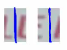
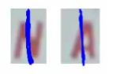

12.19.11
Takeaways from Stanford’s Machine Learning Class
Over the past two months, I’ve participated in Andrew Ng’s online Stanford Machine learning class. It’s a very high-level overview of the field with an emphasis on applications and techniques, rather than theory. Since I just finished the last assignment, it’s a fine time to write down my thoughts on the class!
Overall, I’ve learned quite a bit about how ML is used in practice. Some highlights for me:
- Gradient descent is a very general optimization technique. If you can calculate a function and its partial derivatives, you can use gradient descent. I was particularly impressed with the way we used it to train Neural Networks. We learned how the networks operated, but had no need to think about how to train them — we just used gradient descent.
- There are many advanced “unconstrained optimization” algorithms which can be used as alternatives to gradient descent. These often have the advantage that you don’t need to tune parameters like a learning rate.
- Regularization is used almost universally. I’d previously had very negative associations with using high-order polynomial features, since I most often saw them used in examples of overfitting. But I realize now that they are quite reasonable to add if you also make good use of regularization.
- The backpropagation algorithm for Neural Networks is really just an efficient way to compute partial derivatives (for use by gradient descent and co).
- Learning curves (plots of train/test error as a function of the number of examples) are a great way to figure out how to improve your ML algorithm. For example, if your training and test errors are both high, it means that you’re not overfitting your data set and there’s no point in gathering more data. What it does mean is that you need to add more features (e.g. the polynomial which I used to fear) in order to increase your performance.
The other takeaway is that, as in many fields, there are many “tricks of the trade” in Machine Learning. These are bits of knowledge that aren’t part of the core theory, but which are still enormously helpful for solving real-world problems.
As an example, consider the last problem in the course: Photo OCR. The problem is to take an image like this:
and extract all the text: “LULA B’s ANTIQUE MALL”, “LULA B’s”, “OPEN” and “Lula B’s”. Initially, this seems quite daunting. Machine Learning is clearly relevant here, but how do you break it down into concrete problems which can be attacked using ML techniques? You don’t know where the text is and you don’t even have a rough idea of the text’s size.
This is where the “tricks” come in. Binary classifiers are the “hammer” of ML. You can write a binary classifier to determine whether a fixed-size rectangle contains text:
| Positive examples | |
| Negative examples |
You then run this classifier over thousands of different “windows” in the main image. This tells you where all the bits of text are. If you ignore all the non-contiguous areas, you have a pretty good sense of the bounding boxes for the text in the image.
But even given the text boxes, how do you recognize the characters? Time for another trick! We can build a binary classifier to detect a gap between letters in the center of a fixed-size rectangle:
| Positive examples |  |
| Negative examples |  |
If we slide this along, it will tell us where each character starts and ends. So we can chop the text box up into character boxes. Once we’ve done that, classifying characters in a fixed-size rectangle is another concrete problem which can be tackled with Neural Networks or the like.
In an ML class, you’re presented with this pipeline of ML algorithms for the Photo OCR problem. It makes sense. It reduces the real-world problem into three nice clean, theoretical problems. In the class, you’d likely spend most of your time talking about those three concrete problems. In retrospect, the pipeline seems as natural as could be.
But if you were given the Photo OCR problem in the real world, you might never come up with this breakdown. Unless you knew the trick! And the only way to learn tricks like this is to see them used. And that’s my final takeaway from this practical ML class: familiarity with a vastly larger set of ML tricks.
Robert Konigsberg said,
December 19, 2011 at 9:11 pm
Many people have had great things to say about this course.